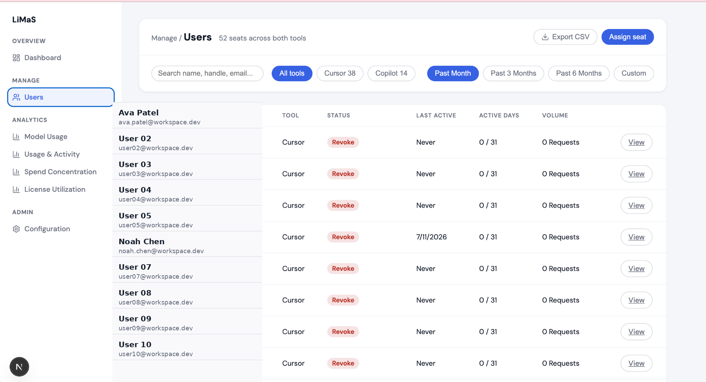
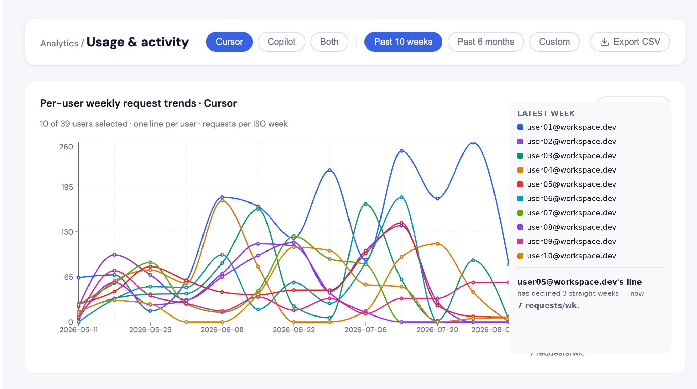
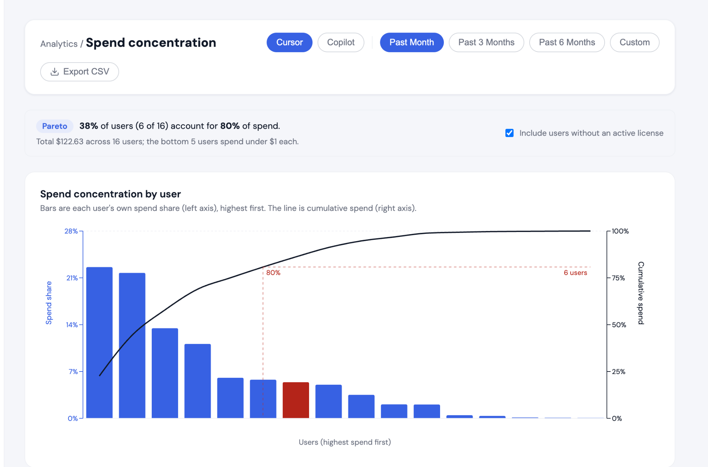
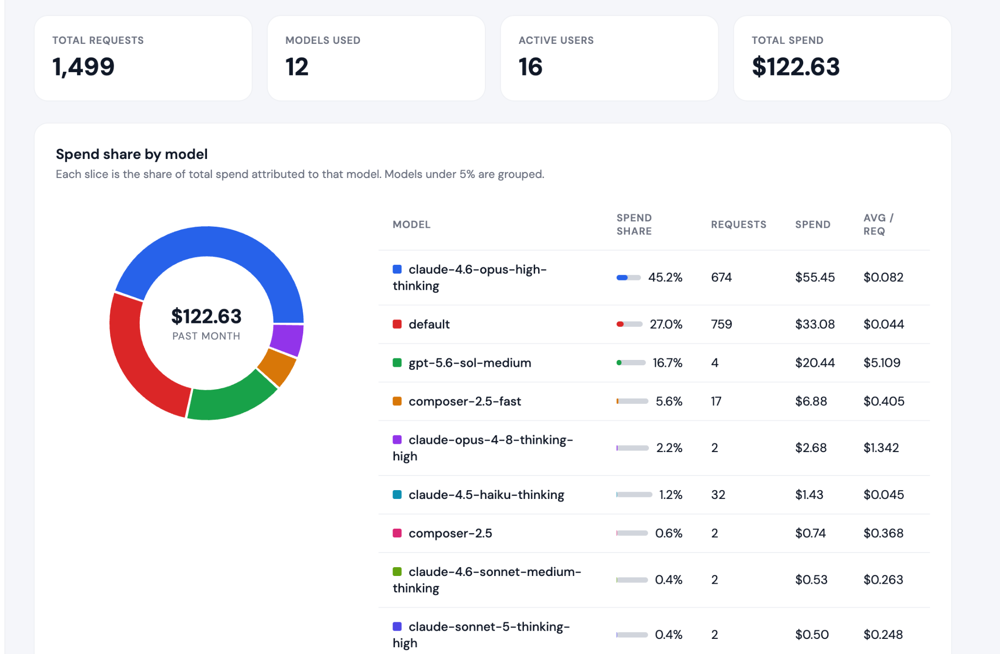

LiMaS

Making fragmented AI-tool data usable.
LiMaS is a full-stack license-management and analytics platform that brings Cursor and GitHub Copilot usage into one system so administrators can understand adoption, spend, engagement, and license utilization.
I worked across ingestion, data modeling, APIs, and the analytics UI rather than on only one layer of the product.
From vendor APIs to recurring analytics.
The ingestion layer authenticates against vendor APIs, walks paginated results, normalizes inconsistent response shapes, and stores analysis-ready records in PostgreSQL.
A schema designed around analysis, not vendor quirks.
I designed a unified PostgreSQL schema spanning users, models, tools, usage events, and license states. That layer lets the product answer questions consistently even when the underlying vendor responses do not match.
Analytics that lead to action.
The product surfaces the views that matter most operationally: a top-level dashboard, searchable user management, per-user activity trends, spend concentration, and model-level spend breakdowns.
These screenshots show how the interface turns raw usage events into decisions about adoption, seat assignment, reclaim opportunities, and spend accountability.



